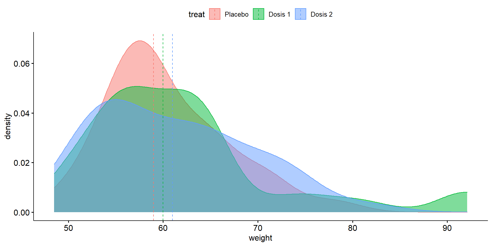

Sesión 6
Curso: R Aplicado a los Proyectos de Investigación
Percy Soto-Becerra, M.D., M.Sc(c)
InkaStats Data Science Solutions | Medical Branch
2022-10-14

Estimación

Estimación (cont.)

Prueba de hipótesis

Lógica frecuentista

La distribución muestral es lo importante

Criterios de decisión (cont.)

12 Errores de concepto acerca del valor p

Si la hipótesis nula es cierta, siempre será posible que algunos estudios den valores muy extremos…

Ejemplos de importancia del IC para valorar imprecisión (incertidumbre) de las estimaciones

Ejemplos de importancia del IC para valorar imprecisión (incertidumbre) de las estimaciones (cont.)

Significancia estadística vs Significancia clínica (cont.)

Pruebas de hipótesis versus modelos estadísticos (ejemplo en estudio observacional)

Pruebas de Hipótesis Paramétricas

La idea en un Tweet!

¿Cómo evaluar normalidad? (cont.)
Preferible.
Histogramas tienen problemas con pocos datos
Usar gráfico de quantil quantil normal (QQ plot normal), es muy útil con pocos datos.
Bandas de confianza son referenciales. Ayudan pero tener cuidado con muestras muy muy grandes.
La función
ggqqplotdel paquete{ggpubr}es muy útil para esto:
¿Qué distribución tiene?
Rpta.: La variable x en la muestra tiene una distribución aproximadamente normal. Luego, concluyo que en la población la distribución de la variable x también debería ser normal y, por tanto, la distribución muestral de medias también debería ser normal.
¿Qué distribución tiene esta otra variable?
Rpta.: La variable x en la muestra tiene una distribución aproximadamente normal, con cierta desviación ligera hacia la derecha. Esto sugiere que la distribución de la población tampoco es normal. Sin embargo, si el n es grande, es razonable asumir que la distribución muestral del estadístico es normal.
¿Y esta otra, qué distribución tiene?

Rpta.: LA variable x en la muestra tiene una distribución que dista bastante de la normal, con una marcada desviación hacia la derecha. Esto sugiere que la distribución de la población tampoco es normal. Sin embargo, en este caso también es incierto saber qué tan grande debe ser el n para que se cumpla el TLC. Sería mejor usar alguna alternativa robusta.
x:
H0: La distribucion de la variable en la poblacion es normal. Ha: La distribucion de la variable en la poblacion no es normal. Conclusión: Con un nivel de significancia del 5%, no se puede rechazar la H0. La distribución de la variable en la población podría ser normal.
weight:
# A tibble: 1 × 3
variable statistic p
<chr> <dbl> <dbl>
1 weight 0.890 0.000221H0: La distribucion de la variable en la poblacion es normal. Ha: La distribucion de la variable en la poblacion no es normal. Conclusión: Con un nivel de significancia del 5%, se rechaza la H0. La distribución de la variable en la población no es normal. Comentario: Según la evidencia gráfica, esta desviación es ligera, por lo que podríamos confiar en la normalidad asintótica.
e2:
# A tibble: 1 × 3
variable statistic p
<chr> <dbl> <dbl>
1 e2 0.910 0.000697H0: La distribucion de la variable en la poblacion es normal. Ha: La distribucion de la variable en la poblacion no es normal. Conclusión: Con un nivel de significancia del 5%, se rechaza la H0. La distribución de la variable en la población no es normal.
Homogeneidad de varianzas
- Consiste en que la
varianzade la variable encada grupoa comparar tiene elmismo valor.

Para un grupo
Se usa función
t_test()de paquete{rstatix}.Permite obtener el
valor ppara una hipótesis dada y elintervalo de confianzapara lamedia.
# A tibble: 1 × 12
estimate .y. group1 group2 n stati…¹ p df conf.…² conf.…³
* <dbl> <chr> <chr> <chr> <int> <dbl> <dbl> <dbl> <dbl> <dbl>
1 60.5 weight 1 null model 53 -35.6 1.15e-36 49 58.3 62.8
# … with 2 more variables: method <chr>, alternative <chr>, and abbreviated
# variable names ¹statistic, ²conf.low, ³conf.highEl argumento
mu = númeroes un valor de referencia contra el que deseamos compararnos.El argumento
detailed = TRUEpermite obtener también losintervalos de confianza.La función
gt()es para mejorar visualización del resultado.
| estimate | .y. | group1 | group2 | n | statistic | p | df | conf.low | conf.high | method | alternative |
|---|---|---|---|---|---|---|---|---|---|---|---|
| 60.524 | weight | 1 | null model | 53 | -35.57465 | 1.15e-36 | 49 | 58.29404 | 62.75396 | T-test | two.sided |
Agregaremos gt() a partir de ahora.
Interpretación:
La media estimada de glucosa fue de 95.48 mg/dL (IC95% 71.6 mg/dL a 119.4 mg/dL). Aunque este valor fue menor a 100 mg/dL (valor de referencia), no es posible concluir que la media poblacional es diferente del valor de refrencia 100 mg/dL (p = 0.627).

¿El nivel medio de estradiol es difernete de 50 UI en la población?
Para variable estradiol:
# A tibble: 1 × 12
estimate .y. group1 group2 n stati…¹ p df conf.…² conf.…³ method
* <dbl> <chr> <chr> <chr> <int> <dbl> <dbl> <dbl> <dbl> <dbl> <chr>
1 113. e2 1 null … 53 6.46 3.6e-8 52 93.2 132. T-test
# … with 1 more variable: alternative <chr>, and abbreviated variable names
# ¹statistic, ²conf.low, ³conf.high
- Interpretación:
La media estimada de estradiol fue de 112.67 UI. Debido a la desviación severa de la normalidad, preferimos no confiar en la inferencia generada por la prueba de hipótesis t de Student y obtamos por una alternativa robusta no parmétrica.
Prueba del Signo:
Permite comparar la
mediana(ya no la media) contra un valor de referencia.No permite estimar intervalos de confianza.
# A tibble: 1 × 12
estimate .y. group1 group2 n stati…¹ p df conf.…² conf.…³
* <dbl> <chr> <chr> <chr> <int> <dbl> <dbl> <dbl> <dbl> <dbl>
1 58.8 weight 1 null model 53 50 1.78e-15 50 56 62.5
# … with 2 more variables: method <chr>, alternative <chr>, and abbreviated
# variable names ¹statistic, ²conf.low, ³conf.high- Interpretación:
La mediana estimada de glucosa fue de 95.53 mg/dL. Aunque este valor fue menor a 100 mg/dL (valor de referencia), no es posible concluir que la media poblacional es diferente del valor de refrencia (p = 0.627).
Supuestos
Aleatorización
Indenpendencia de observaciones
Variable al menos en escala ordinal
Supuestos implícitos (no error de medición ni sesgos)
¿El nivel mediano de estradiol es difernete de 50 UI en la población?
# A tibble: 1 × 12
estim…¹ .y. group1 group2 n stati…² p df conf.…³ conf.…⁴ method
* <dbl> <chr> <chr> <chr> <int> <dbl> <dbl> <dbl> <dbl> <dbl> <chr>
1 104. e2 1 null … 53 42 2.25e-5 53 75.8 123. Sign-…
# … with 1 more variable: alternative <chr>, and abbreviated variable names
# ¹estimate, ²statistic, ³conf.low, ⁴conf.highSupuestos
Aleatorización
Indenpendencia de observaciones
Variable al menos en escala ordinal
Supuestos implícitos (no error de medición ni sesgos)
- Interpretación:
La mediana estimada de estradiol fue de 103.95 UI. Este valor fue mayor a 50 UI (valor de referencia) (p < 0.001).
Lógica de ANOVA (4/4)

Kruskal Wallis test
Alternativa
no paramétricadeANOVA one-way.Si supuestos se cumplen, compara
medianas.Usaremos función
kruska_test()del paquete{rstatix}.Esta función permite el uso de otros tipos de ANOVA: https://rpkgs.datanovia.com/rstatix/reference/kruskal_test.html
# A tibble: 1 × 6
.y. n statistic df p method
* <chr> <int> <dbl> <int> <dbl> <chr>
1 weight 106 0.0347 2 0.983 Kruskal-Wallis- La prueba Kruskal Wallis no genera resultados puntuales, debemos generarlos con otra función:
# A tibble: 3 × 5
treat variable n median iqr
<fct> <chr> <dbl> <dbl> <dbl>
1 Placebo weight 33 59 8.4
2 Dosis 1 weight 33 60 9
3 Dosis 2 weight 37 61 12 - También es bueno visualizar las distribuciones

Supuestos
Aleatorización
Indenpendencia de observaciones
Misma distribución salvo por la mediana:
Esto significa que Kruskal Wallis también es perjudicado en cierto modo por la heterogeneidad de varianzas porque afecta el supuesto de igualdad de distribuciones
Podemos usar gráfico de densidades:
library(ggpubr)
datos %>%
ggdensity(x = "weight",
y = "..density..",
fill = "treat",
color = "treat",
add = "median")
+ Podemos usar gráfico de violin: Combina cajas y densidad
@psotob91
https://github.com/psotob91
percys1991@gmail.com